Wednesday, Feb 1
You can also download a PDF copy of this lecture.
The Estimated Expected Response
Assuming the linear model \[ E(Y) = \beta_0 + \beta_1 x_{1} + \beta_2 x_{2} + \cdots + \beta_k x_{k}, \] the estimated expected response at specified values of the response variables is \[ \widehat{E(Y)} = \hat\beta_0 + \hat\beta_1 x_{1} + \hat\beta_2 x_{2} + \cdots + \hat\beta_k x_{k}, \] where \(x_{1}, x_{2}, \dots, x_{k}\) are specified values of the explanatory variables. Because \(\widehat{E(Y)}\) is sometimes used for predicting \(Y\), we sometimes refer to it as the “predicted value” of \(Y\) and denote it as \(\hat{y}\).
Note that an expected response is simply a linear combination of the form \[ \ell = a_0\beta_0 + a_1\beta_1 + a_2\beta_2 + \cdots + a_k\beta_k + b, \] where \(a_0 = 1, a_1 = x_{1}, a_2 = x_{2}, \dots, a_k = x_{k}\) and \(b = 0\).
Example: Consider the following model for the
whiteside data.
m <- lm(Gas ~ Insul + Temp + Insul:Temp, data = MASS::whiteside) # note :: operator
summary(m)$coefficients Estimate Std. Error t value Pr(>|t|)
(Intercept) 6.8538 0.13596 50.409 7.997e-46
InsulAfter -2.1300 0.18009 -11.827 2.316e-16
Temp -0.3932 0.02249 -17.487 1.976e-23
InsulAfter:Temp 0.1153 0.03211 3.591 7.307e-04What is the estimated expected gas consumption at 0, 5, and 10
degrees C after insulation? Either lincon or
contrast can be used (although contrast is
probably easier).
library(trtools)
lincon(m, a = c(1,1,0,0)) # After @ 0C estimate se lower upper tvalue df pvalue
(1,1,0,0),0 4.724 0.1181 4.487 4.961 40 52 9.918e-41lincon(m, a = c(1,1,5,5)) # After @ 5C estimate se lower upper tvalue df pvalue
(1,1,5,5),0 3.334 0.06024 3.213 3.455 55.35 52 6.772e-48lincon(m, a = c(1,1,10,10)) # After @ 10C estimate se lower upper tvalue df pvalue
(1,1,10,10),0 1.945 0.14 1.664 2.225 13.89 52 3.869e-19contrast(m, a = list(Insul = "After", Temp = c(0,5,10)),
cnames = c("After @ 0C","After @ 5C","After @ 10C")) estimate se lower upper tvalue df pvalue
After @ 0C 4.724 0.11810 4.487 4.961 40.00 52 9.918e-41
After @ 5C 3.334 0.06024 3.213 3.455 55.35 52 6.772e-48
After @ 10C 1.945 0.13996 1.664 2.225 13.89 52 3.869e-19There are better approaches if we want more points.
d <- expand.grid(Temp = c(0,5,10), Insul = c("Before","After"))
d Temp Insul
1 0 Before
2 5 Before
3 10 Before
4 0 After
5 5 After
6 10 Afterpredict(m, newdata = d) 1 2 3 4 5 6
6.854 4.888 2.921 4.724 3.334 1.945 predict(m, newdata = d, interval = "confidence") fit lwr upr
1 6.854 6.581 7.127
2 4.888 4.760 5.016
3 2.921 2.676 3.167
4 4.724 4.487 4.961
5 3.334 3.213 3.455
6 1.945 1.664 2.225cbind(d, predict(m, newdata = d, interval = "confidence")) Temp Insul fit lwr upr
1 0 Before 6.854 6.581 7.127
2 5 Before 4.888 4.760 5.016
3 10 Before 2.921 2.676 3.167
4 0 After 4.724 4.487 4.961
5 5 After 3.334 3.213 3.455
6 10 After 1.945 1.664 2.225Prediction and the Standard Error of Prediction
The estimated expected response \(\widehat{E(Y)}\) can also be viewed as the predicted value of \(Y\), justified by least squares. The estimate of \(Y\) is then \[ \hat{y} = \hat\beta_0 + \hat\beta_1x_{1} + \hat\beta_{2}x_{2} + \cdots + \hat\beta_kx_{k}. \] The (estimated) standard deviation of \(Y - \hat{Y}\) is the standard error of prediction, defined as \[ \text{SE}(\hat{Y} - Y) = \sqrt{\text{SE}(\hat{Y})^2 + \sigma^2}, \] where \(\sigma^2\) is the variance of \(Y\) (note two sources of variability — that of \(\hat{Y}\) and that of \(Y\)). The prediction interval for \(Y\) is then \[ \hat{y} \pm t\sqrt{\text{SE}(\hat{Y})^2 + \sigma^2}. \] Compare this with the confidence interval for \(\widehat{E(Y)}\) which is \[ \hat{y} \pm t \text{SE}(\hat{Y}). \] Prediction intervals for \(Y\) are wider than confidence intervals for \(E(Y)\).
Example: Prediction intervals for lm
objects can also be obtained form predict.
predict(m, newdata = d, interval = "prediction") fit lwr upr
1 6.854 6.151 7.557
2 4.888 4.227 5.548
3 2.921 2.228 3.614
4 4.724 4.034 5.414
5 3.334 2.675 3.994
6 1.945 1.238 2.651Visualization of Confidence Intervals and Prediction Intervals
Example: Suppose we want to visualize the model for
the whiteside data.
First consider a plot of the raw data.
p <- ggplot(MASS::whiteside, aes(x = Temp, y = Gas, color = Insul)) +
geom_point() + theme_minimal() +
labs(x = "Temperature (C)", y = "Gas Consumption", color = "Insulation")
plot(p)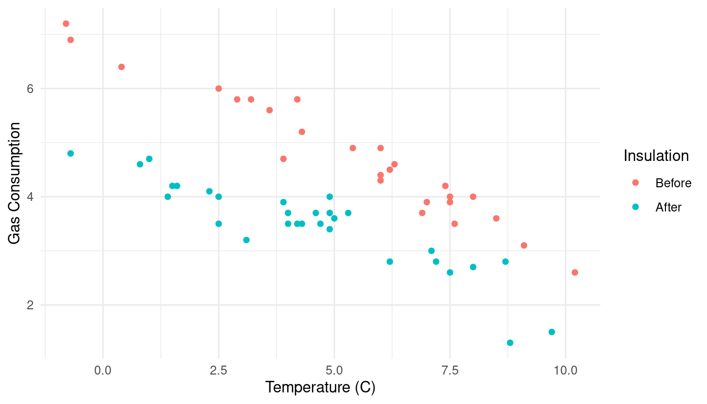 There are several ways we could show confidence intervals for the expected response or prediction intervals.
d <- expand.grid(Insul = c("Before","After"), Temp = seq(-1, 11, by = 1))
d <- cbind(d, predict(m, newdata = d, interval = "confidence"))
head(d) Insul Temp fit lwr upr
1 Before -1 7.247 6.934 7.561
2 After -1 5.002 4.724 5.280
3 Before 0 6.854 6.581 7.127
4 After 0 4.724 4.487 4.961
5 Before 1 6.461 6.227 6.694
6 After 1 4.446 4.247 4.644p <- p + geom_line(aes(y = fit), data = d)
plot(p)
p <- p + geom_errorbar(aes(y = NULL, ymin = lwr, ymax = upr), width = 0.25, data = d)
plot(p)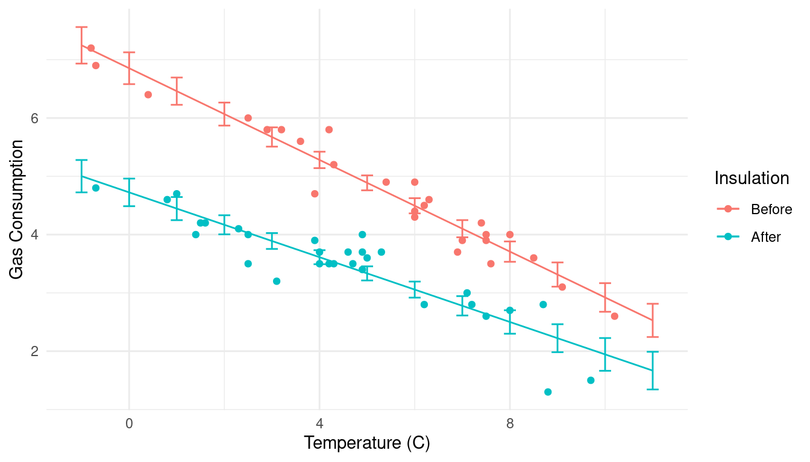 Here’s another approach using confidence intervals for the expected response.
d <- expand.grid(Insul = c("Before","After"), Temp = seq(-1, 11, length = 100))
d <- cbind(d, predict(m, newdata = d, interval = "confidence"))
p <- ggplot(MASS::whiteside, aes(x = Temp, y = Gas, color = Insul)) +
geom_point() + theme_minimal() +
labs(x = "Temperature (C)", y = "Gas Consumption", color = "Insulation") +
geom_line(aes(y = fit), data = d) +
geom_ribbon(aes(y = NULL, ymin = lwr, ymax = upr, fill = Insul),
alpha = 0.25, color = NA, data = d, show.legend = FALSE)
plot(p)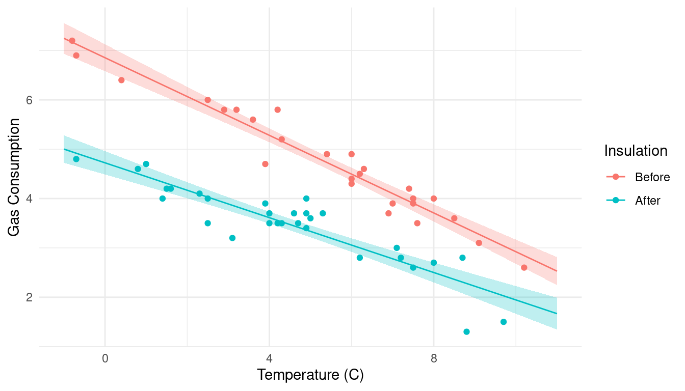 Same approach but now for prediction intervals.
d <- expand.grid(Insul = c("Before","After"), Temp = seq(-1, 11, length = 100))
d <- cbind(d, predict(m, newdata = d, interval = "prediction"))
p <- ggplot(MASS::whiteside, aes(x = Temp, y = Gas, color = Insul)) +
geom_point() + theme_minimal() +
labs(x = "Temperature (C)", y = "Gas Consumption", color = "Insulation") +
geom_line(aes(y = fit), data = d) +
geom_ribbon(aes(y = NULL, ymin = lwr, ymax = upr, fill = Insul),
alpha = 0.25, color = NA, data = d, show.legend = FALSE)
plot(p)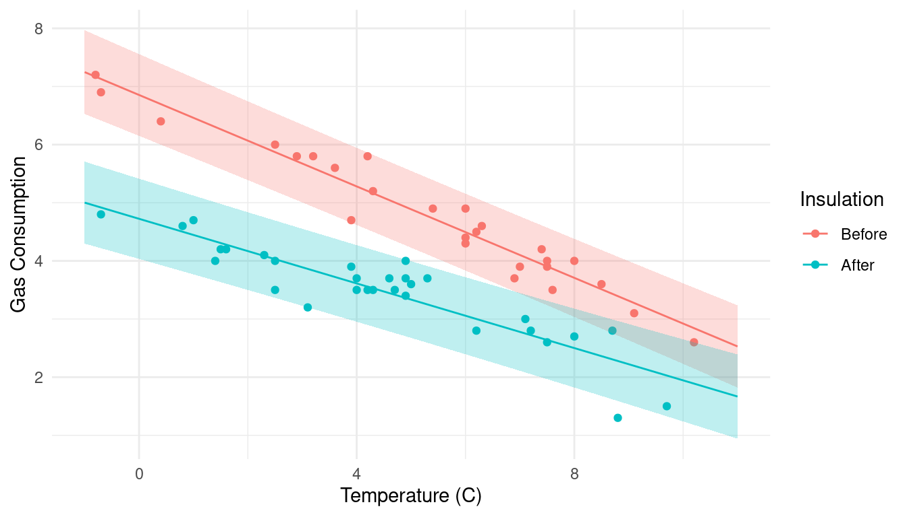 We can put them together, and move the legend.
d1 <- expand.grid(Insul = c("Before","After"), Temp = seq(-1, 11, length = 100))
d1 <- cbind(d1, predict(m, newdata = d1, interval = "confidence"))
d2 <- expand.grid(Insul = c("Before","After"), Temp = seq(-1, 11, length = 100))
d2 <- cbind(d2, predict(m, newdata = d2, interval = "prediction"))
p <- ggplot(MASS::whiteside, aes(x = Temp, y = Gas, color = Insul)) +
geom_point() + theme_minimal() +
labs(x = "Temperature (C)", y = "Gas Consumption", color = "Insulation") +
geom_line(aes(y = fit), data = d1) +
geom_ribbon(aes(y = NULL, ymin = lwr, ymax = upr, fill = Insul),
alpha = 0.25, color = NA, data = d1, show.legend = FALSE) +
geom_ribbon(aes(y = NULL, ymin = lwr, ymax = upr, fill = Insul),
alpha = 0.25, color = NA, data = d2, show.legend = FALSE) +
theme(legend.position = c(0.8,0.8))
plot(p)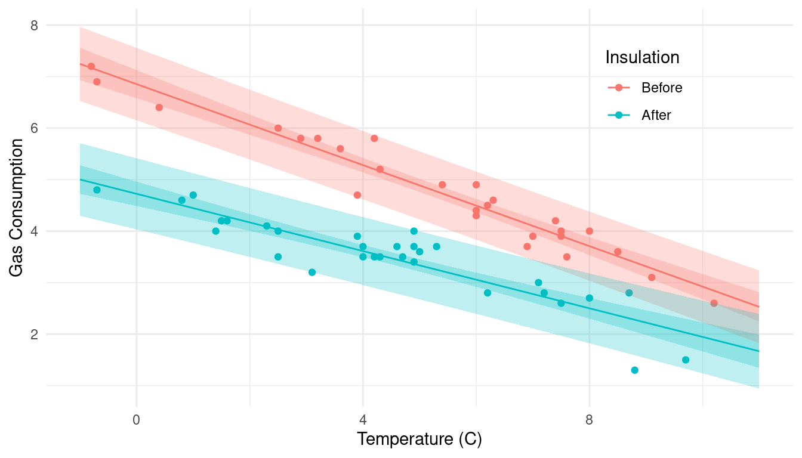 Black and white for the color printer challenged.
d1 <- expand.grid(Insul = c("Before","After"), Temp = seq(-1, 11, length = 100))
d1 <- cbind(d1, predict(m, newdata = d1, interval = "confidence"))
d2 <- expand.grid(Insul = c("Before","After"), Temp = seq(-1, 11, length = 100))
d2 <- cbind(d2, predict(m, newdata = d2, interval = "prediction"))
p <- ggplot(MASS::whiteside, aes(x = Temp, y = Gas)) +
geom_point(size = 1) + theme_minimal() + facet_wrap(~ Insul) +
labs(x = "Temperature (C)", y = "Gas Consumption") +
geom_line(aes(y = fit), data = d1) +
geom_ribbon(aes(y = NULL, ymin = lwr, ymax = upr), fill = "black",
alpha = 0.25, color = NA, data = d1, show.legend = FALSE) +
geom_ribbon(aes(y = NULL, ymin = lwr, ymax = upr), fill = "black",
alpha = 0.25, color = NA, data = d2, show.legend = FALSE)
plot(p)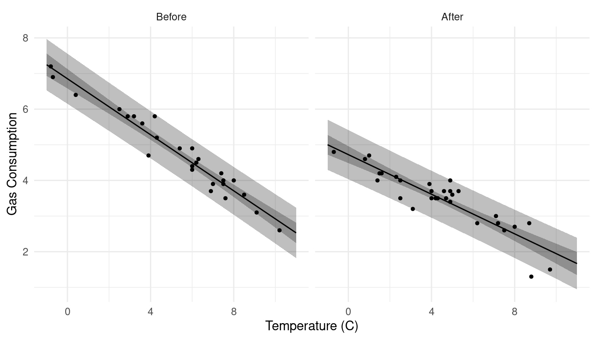
Example: Consider visualizing several models for the
trees data. How do we deal with having two quantitative
explanatory variables?
m <- lm(Volume ~ Height + Girth, data = trees)
d <- expand.grid(Height = seq(63, 87, length = 100), Girth = c(8, 13, 18))
d <- cbind(d, predict(m, newdata = d, interval = "confidence"))
p <- ggplot(d, aes(x = Height, y = fit)) + theme_minimal() +
geom_line() + facet_wrap(~ Girth) +
geom_ribbon(aes(ymin = lwr, ymax = upr), alpha = 0.25) +
labs(x = "Height (ft)", y = "Expected Volume (cubic feet)")
plot(p)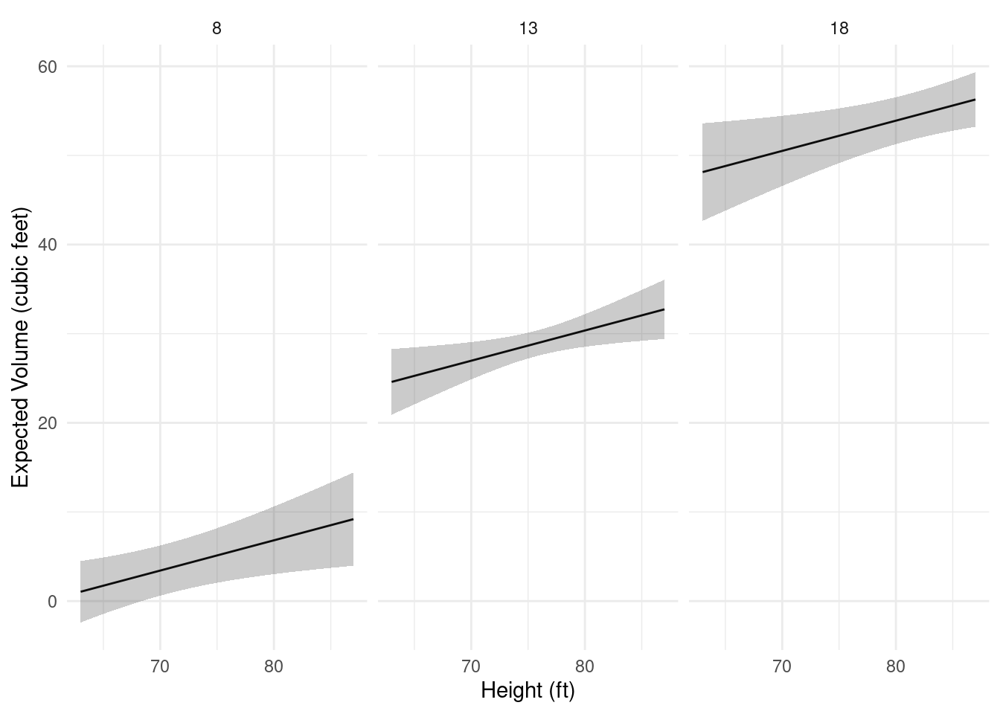
Now suppose there is a third categorical variable
Species.
set.seed(123)
trees$Species <- sample(c("A","B"), 31, TRUE)
head(trees) Girth Height Volume Species
1 8.3 70 10.3 A
2 8.6 65 10.3 A
3 8.8 63 10.2 A
4 10.5 72 16.4 B
5 10.7 81 18.8 A
6 10.8 83 19.7 Bm <- lm(Volume ~ Height + Girth + Height:Species + Girth:Species, data = trees)
summary(m)$coefficients Estimate Std. Error t value Pr(>|t|)
(Intercept) -58.67683 9.12536 -6.4301 8.195e-07
Height 0.37798 0.14777 2.5579 1.670e-02
Girth 4.55074 0.34654 13.1320 5.542e-13
Height:SpeciesB -0.07239 0.09906 -0.7307 4.715e-01
Girth:SpeciesB 0.39908 0.56071 0.7117 4.830e-01d <- expand.grid(Height = seq(63, 87, length = 100), Girth = c(8, 13, 18), Species = c("A","B"))
d <- cbind(d, predict(m, newdata = d, interval = "confidence"))
p <- ggplot(d, aes(x = Height, y = fit)) + theme_minimal() +
geom_line() + facet_grid(Species ~ Girth) +
geom_ribbon(aes(ymin = lwr, ymax = upr), alpha = 0.25) +
labs(x = "Height (ft)", y = "Expected Volume (cubic feet)")
plot(p)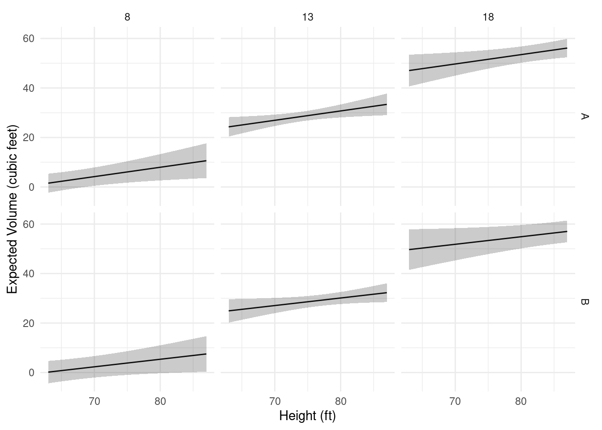
The help file for trees (see ?trees) suggests the model
\[
E(V_i) = \beta_1h_ig_i^2,
\] which might be reasonable if we think of a tree as being
approximately a cylinder or a cone and assume that expected volume is
approximately proportional to the volume of a cylinder or cone (girth is
actually diameter). This is a linear model of the form \[
E(V_i) = \beta_0 + \beta_1 x_i,
\] where \(\beta_0 = 0\) and
\(x_i = h_ig_i^2\). To specify \(h_ig_i^2\) as an explanatory variable, we
need to use I() to keep R from misinterpreting interpret
’*’ and ‘^’ anything other than the mathematical operators.
m <- lm(Volume ~ -1 + I(Height*Girth^2), data = trees)
summary(m)$coefficients Estimate Std. Error t value Pr(>|t|)
I(Height * Girth^2) 0.002108 2.722e-05 77.44 4.137e-36d <- expand.grid(Height = seq(63, 87, length = 100), Girth = c(8, 13, 18))
d <- cbind(d, predict(m, newdata = d, interval = "confidence"))
p <- ggplot(d, aes(x = Height, y = fit)) + theme_minimal() +
geom_line() + facet_wrap(. ~ Girth) +
geom_ribbon(aes(ymin = lwr, ymax = upr), alpha = 0.25) +
labs(x = "Height (ft)", y = "Expected Volume (cubic feet)")
plot(p)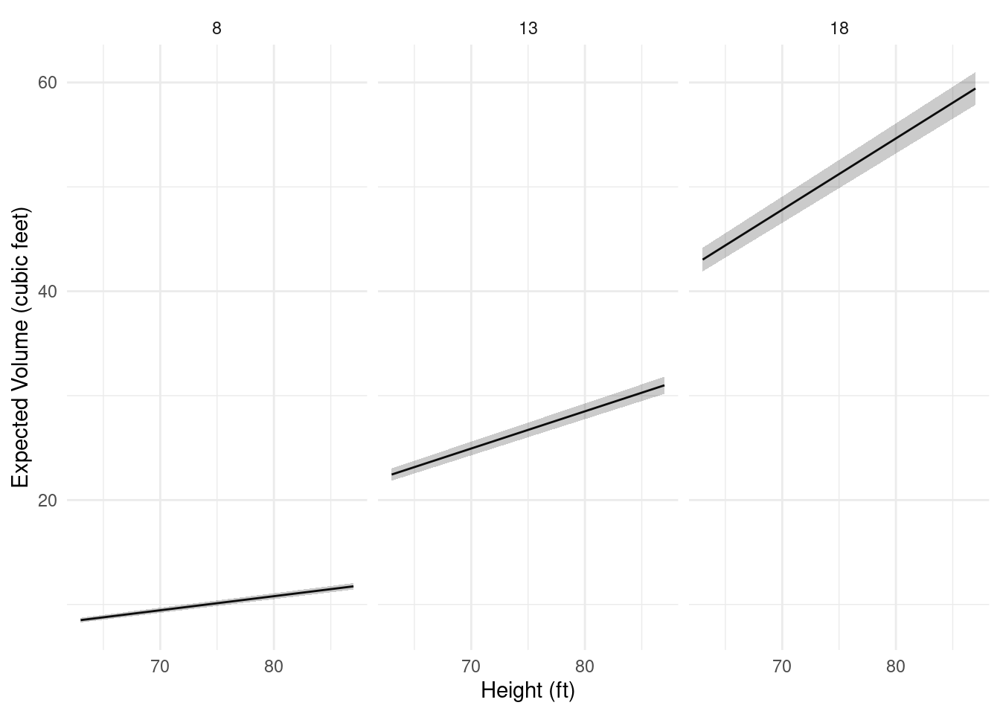 Now suppose we specify the following model.
m <- lm(Volume ~ -1 + I(Height*Girth^2):Species, data = trees)
summary(m)$coefficients Estimate Std. Error t value Pr(>|t|)
I(Height * Girth^2):SpeciesA 0.002094 3.505e-05 59.72 6.526e-32
I(Height * Girth^2):SpeciesB 0.002131 4.425e-05 48.17 3.132e-29We can see that this model is \[ E(V_i) = \beta_1h_ig_i^2a_i + \beta_2h_ig_i^2b_i, \] where \[ a_i = \begin{cases} 1, & \text{if the $i$-th observation is of species A}, \\ 0, & \text{otherwise}, \end{cases} \] \[ b_i = \begin{cases} 1, & \text{if the $i$-th observation is of species B}, \\ 0, & \text{otherwise}, \end{cases} \] so we can write the model as \[ E(V_i) = \begin{cases} \beta_1h_ig_i^2, & \text{if the $i$-th observation is of species A}, \\ \beta_2h_ig_i^2, & \text{if the $i$-th observation is of species B}. \end{cases} \]
d <- expand.grid(Height = seq(63, 87, length = 100),
Girth = c(8, 13, 18), Species = c("A","B"))
d <- cbind(d, predict(m, newdata = d, interval = "confidence"))
p <- ggplot(d, aes(x = Height, y = fit)) + theme_minimal() +
geom_line() + facet_grid(Species ~ Girth) +
geom_ribbon(aes(ymin = lwr, ymax = upr), alpha = 0.25) +
labs(x = "Height (ft)", y = "Expected Volume (cubic feet)")
plot(p)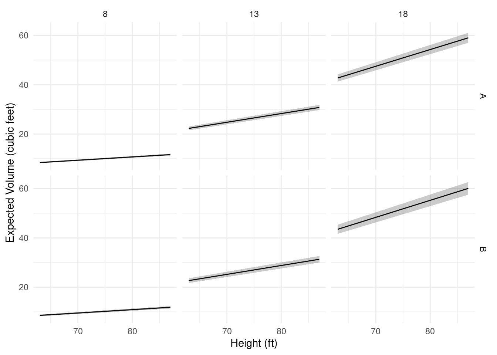 Comparison of the two species:
lincon(m, a = c(-1,1)) # b2 - b1 estimate se lower upper tvalue df pvalue
(-1,1),0 3.786e-05 5.645e-05 -7.759e-05 0.0001533 0.6707 29 0.5077Example: Visualization of models for an experiment on mate preference in female platyfish.
Consider data from an experiment on mate preference in female platyfish.
head(Sleuth3::case0602) Percentage Pair Length
1 43.7 Pair1 35
2 54.0 Pair1 35
3 49.8 Pair1 35
4 65.5 Pair1 35
5 53.1 Pair1 35
6 53.0 Pair1 35p <- ggplot(Sleuth3::case0602, aes(x = Pair, y = Percentage)) +
geom_point(alpha = 0.5) + theme_minimal() + coord_flip() +
labs(x = NULL, y = "Percent Time Spent with Yellow-Tailed Male") +
scale_y_continuous(breaks = seq(0, 100, by = 10), limits = c(0,100))
plot(p)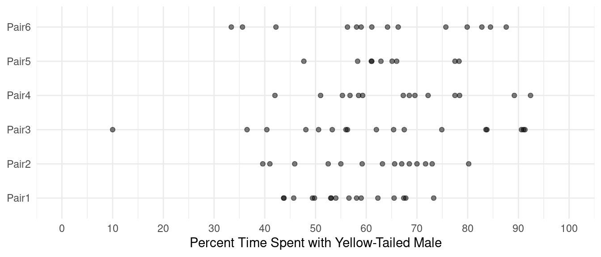 We will specify a model to allow for differences in the expected response over male pairs.
m <- lm(Percentage ~ Pair, data = Sleuth3::case0602)
summary(m)$coefficients Estimate Std. Error t value Pr(>|t|)
(Intercept) 56.406 3.864 14.5965 5.208e-24
PairPair2 4.479 5.657 0.7919 4.308e-01
PairPair3 6.023 5.384 1.1187 2.667e-01
PairPair4 10.594 5.657 1.8727 6.485e-02
PairPair5 7.805 6.441 1.2118 2.292e-01
PairPair6 6.929 5.657 1.2250 2.243e-01Computing and plotting the estimated expected response for each pair.
contrast(m, a = list(Pair = paste("Pair", 1:6, sep = "")),
cnames = paste("Pair", 1:6, sep = "")) estimate se lower upper tvalue df pvalue
Pair1 56.41 3.864 48.71 64.10 14.60 78 5.208e-24
Pair2 60.89 4.131 52.66 69.11 14.74 78 2.990e-24
Pair3 62.43 3.749 54.97 69.89 16.65 78 2.114e-27
Pair4 67.00 4.131 58.78 75.22 16.22 78 1.052e-26
Pair5 64.21 5.152 53.95 74.47 12.46 78 3.039e-20
Pair6 63.34 4.131 55.11 71.56 15.33 78 3.006e-25d <- data.frame(Pair = paste("Pair", 1:6, sep = ""))
d <- cbind(d, predict(m, newdata = d, interval = "confidence"))
d Pair fit lwr upr
1 Pair1 56.41 48.71 64.10
2 Pair2 60.89 52.66 69.11
3 Pair3 62.43 54.97 69.89
4 Pair4 67.00 58.78 75.22
5 Pair5 64.21 53.95 74.47
6 Pair6 63.34 55.11 71.56p <- p + geom_errorbar(aes(y = NULL, ymin = lwr, ymax = upr), width = 0.2, data = d)
plot(p)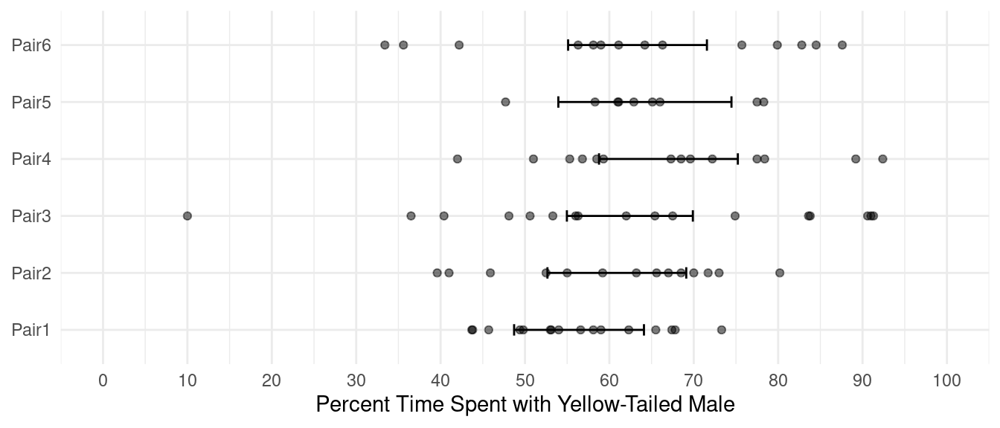
Try replacing confidence with prediction to
see prediction intervals.